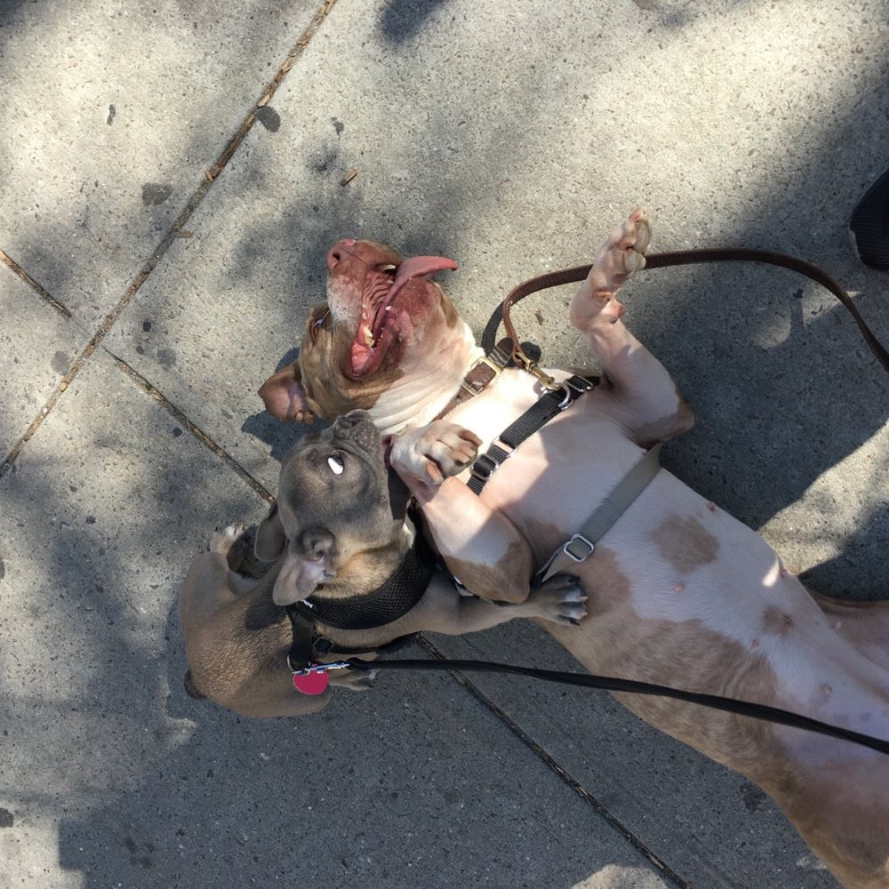

Do you come to me?
Yes. In-home sessions anywhere in the Portland metro: Portland proper, Beaverton, Gresham, Lake Oswego, Vancouver, and the neighborhoods in between. If you're not sure your address counts, ask. I like a drive.
What if I'm not in Portland?
Remote coaching, over video. Same sessions, same prices. Most of a session is me coaching you, and you fit on a screen just fine. Details on the services page.
Do you work with puppies?
Yes, and honestly, lucky you. A puppy who learns at ten weeks that the world is safe skips years of undoing later. We work on socialization, handling, name response, and the fine art of not biting the hands that feed. Bring your questions and your sleep deprivation.
My dog has bitten someone. Can you still help?
Maybe, and I take it seriously. Start with the free consult and tell me everything, including the bites. I'd rather hear all of it up front. Some cases I take, some belong with a veterinary behaviorist, and I'll tell you which honestly. Either way you leave that call knowing your next step.
What should I have ready for a session?
A regular six-foot leash, a bag of small soft treats your dog would sell secrets for, and whatever gear you already use. No prong collars or e-collars. If you own them, that's fine, no judgment. We'll retire them together.
I have more than one dog.
That's not technically a question, but yes. Multi-dog households book a Premium session (90 minutes) so nobody gets shortchanged. We usually work the dogs one at a time before putting the band back together.

Do you do evenings and weekends?
That's most of my calendar, honestly. I have a day job too, so sessions mostly run evenings and weekends. Which works out, because that's when your dog's real life happens anyway.
How many sessions will this take?
Honest answer: it depends, and anyone who quotes you a number before meeting your dog is selling something. Leash manners and jumping usually shape up in a handful of sessions. Reactivity and fear are longer arcs, months not weeks. You'll get my real estimate in the consult, free, before you've spent a dollar.
Do you train the dog, or me?
You, mostly. Sorry. This isn't board-and-train; your dog lives with you, so the skills have to live in your hands. The good news is that you're trainable. I've seen worse cases than you.
What methods do you use?
Force-free, always. Classical conditioning and positive reinforcement. No shock, no prongs, no alpha theater. Not because it's gentle, though it is. Because it's what the research says works, and keeps working after I leave.
How much does it cost?
The consult is free: 30 minutes on video, no obligation. After that, sessions are $125 (Standard, 75 minutes) or $175 (Premium, 90 minutes), in-home or remote. No packages you have to buy up front, no contracts.
What if I need to cancel?
Life happens. Dogs eat calendars. Give me 24 hours notice and there's no charge. Less than that and it's half the session fee. The fine print lives in the terms.
I've already tried another trainer. Is it too late?
Not even close. Plenty of my clients arrived with a binder from somewhere else. A plan built for your specific dog, in the place your dog actually lives, is a different product than week four of a group class.
What if The Dog Vibes isn't the right fit?
That's exactly what the consult is for. We figure it out together, no pressure, no commitment. If I'm not the right match, I'll say so and point you at someone who is.